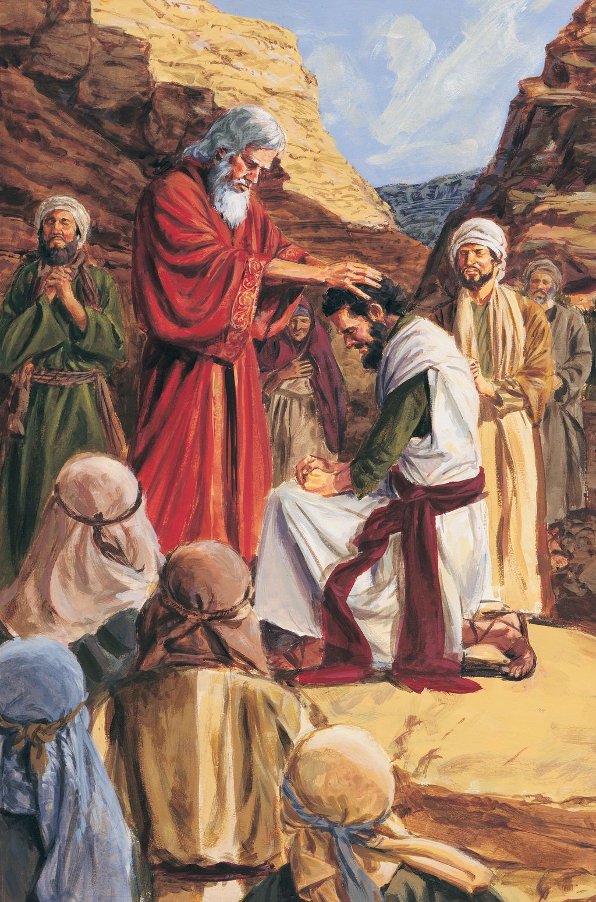
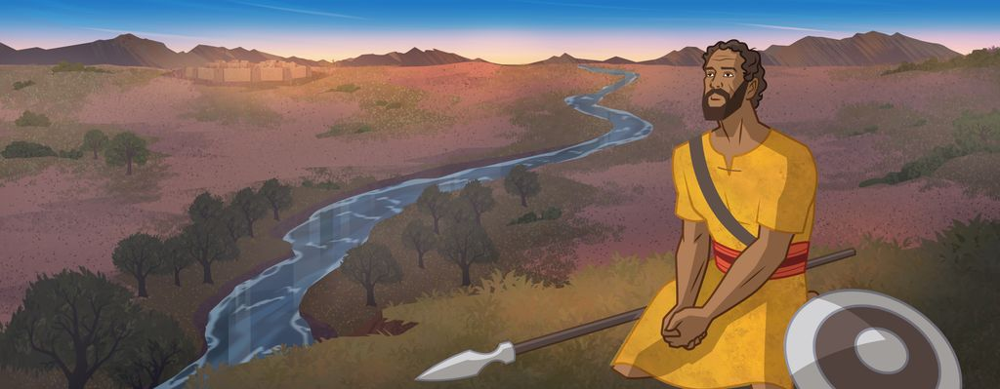
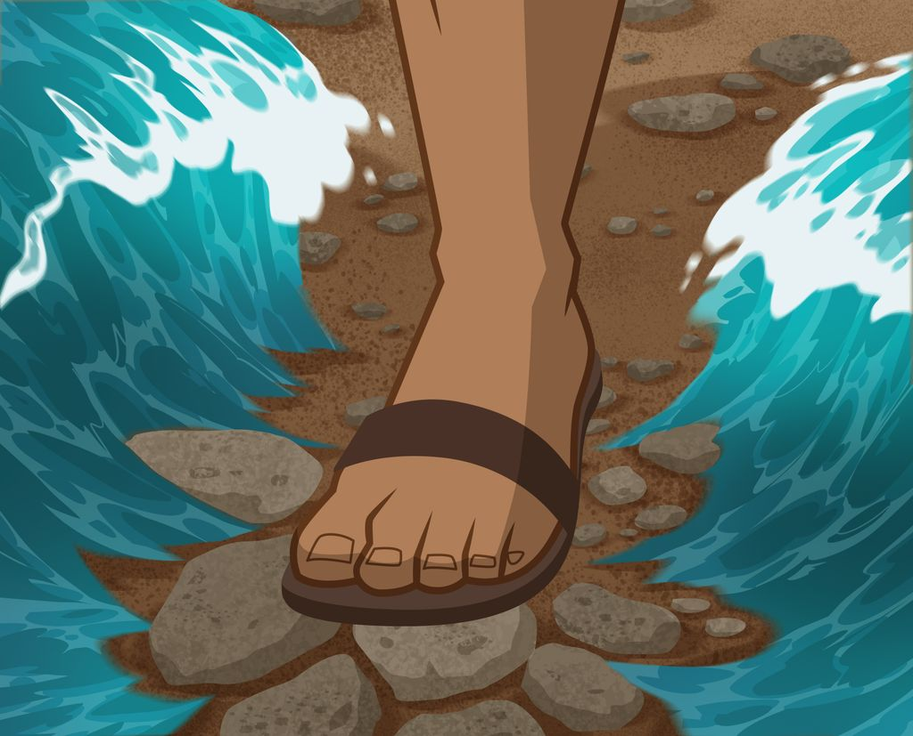
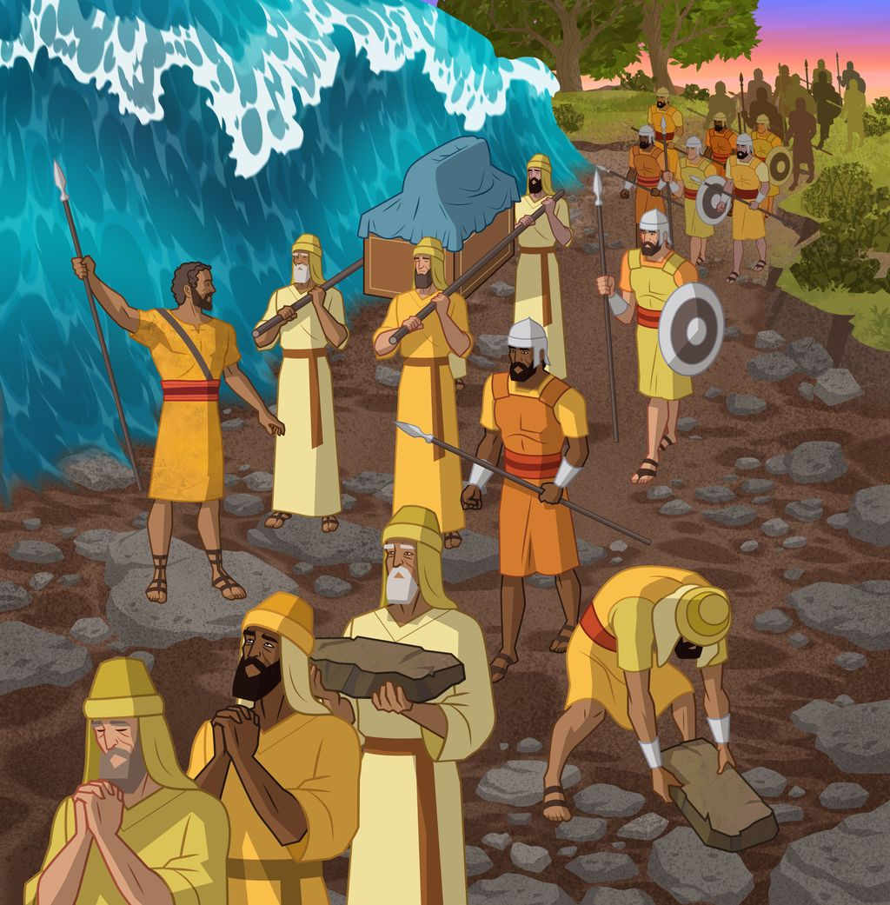
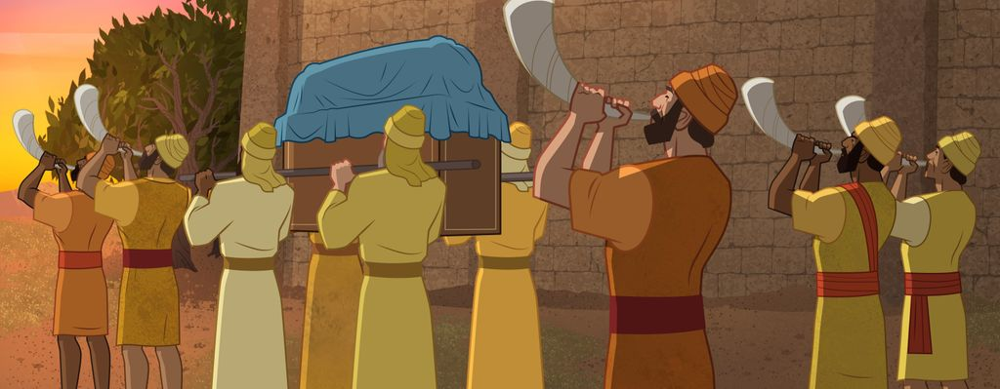
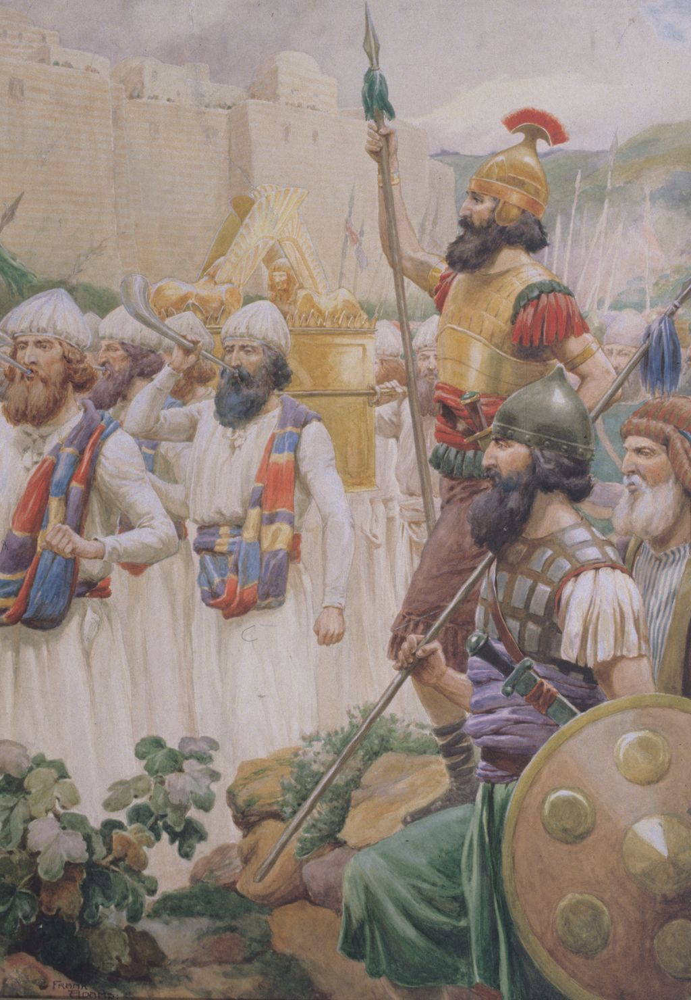
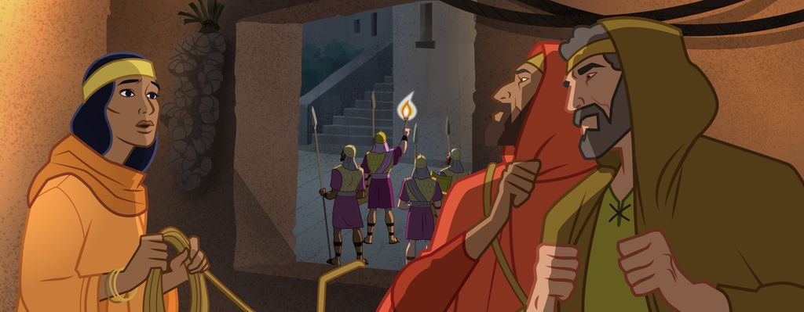
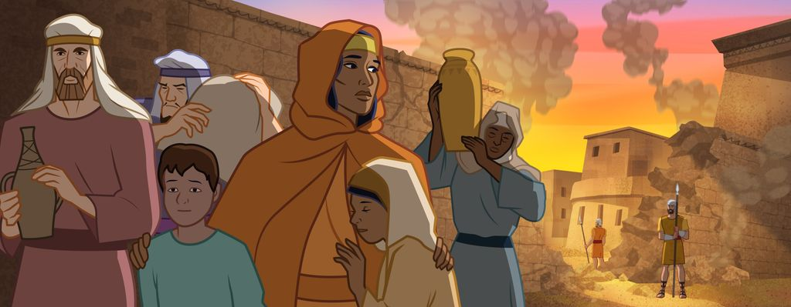
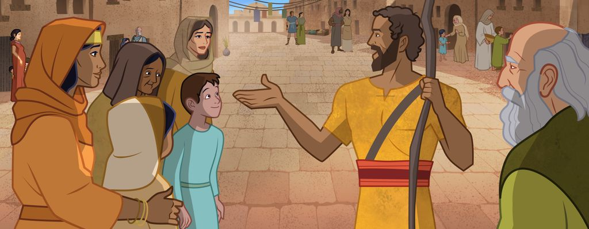
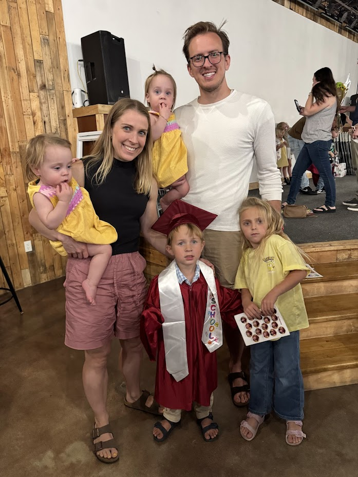

Be Strong and of a Good Courage
Opening: Moses is gone, now what?
~3 min- Quick callback to last week: Moses climbed Mount Nebo, saw the promised land, and died there (Deut. 34). The people had followed Moses for 40 years. Now he's gone.
- Ask: if you were one of the Israelites, how would you feel? (Scared, lost, unsure who's in charge.)
- The Lord picks Joshua to lead next. Joshua has been Moses's helper since he was young (Ex. 24:13; 33:11), but now he's the one in front.


- Read Joshua 1:5–9 together. The Lord is talking directly to Joshua, who is about to lead two million people into a land full of fortified cities and enemies.
- Count how many times the Lord says "be strong and of a good courage" in this chapter. (Verses 6, 7, 9, and the people repeat it back to Joshua in verse 18.) Four times in one chapter. The Lord really wants Joshua to hear it.
- Ask: what's the difference between being brave because you're tough, and being brave because God is with you? (The second one works even when you're scared, small, or not the strongest.)
- Memorize together. Say Joshua 1:9 out loud as a class three times. Then have them turn to a partner and say it once.
What Joshua does with that courage
~8 minQuick tour of the stories where Joshua acts on the Lord's promise. Move fast. This is the "look what happens when you trust God" montage.
Crossing the Jordan (Joshua 3)
The river is at flood stage. The priests step in first, carrying the ark, and the water piles up. The people cross on dry ground. Faith first, miracle second.


Jericho (Joshua 6)
March around the city once a day for six days, then seven times on the seventh day, then shout. The walls fall. Strange instructions, but Joshua follows them exactly.



Rahab (Joshua 2; 6:22–25)
A woman in Jericho who hides the Israelite spies because she believes in their God. She and her family are saved. Even an outsider can choose the Lord and be welcomed in.


- Ask: what do these stories have in common? (Following God's instructions, even when they're weird or scary. Courage = doing what He says.)

- Now jump to the end of Joshua's life. He's old. He gathers all of Israel one last time to give his final sermon, just like Moses did.
Discussion
Show side-by-side: Sister Linford and Brother Linford when we were your age.
Point out: back then we didn't know each other yet. We were each just a kid trying to figure out how to follow Jesus, like you. The choices we made then turned into the family we have now.

Land it. Every choice you make this week to serve the Lord is you building the kind of "house" you're going to have someday.
- Memorize together. "As for me and my house, we will serve the Lord." Say it three times together, then have each kid say it once with their name in front: "As for [name] and my house..."
Take-home and testimony
~3 min- Two scriptures, one challenge: pick the one that hits you hardest this week.
- If you feel scared about something hard, say Joshua 1:9 to yourself.
- If you have a choice to make, remember Joshua 24:15.
- Hand out the scripture card with both verses on it. Challenge: put it where you'll see it every day this week.
- Brief testimony. The Lord told Joshua to be strong because He was with him. The same promise is for you. And you get to choose, every day, who you serve.
- Close with prayer.